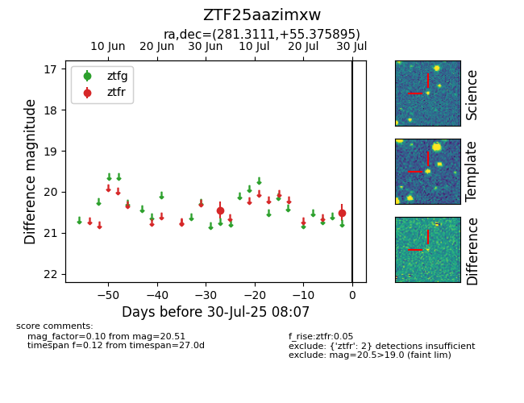

Target ZTF25aazimxw at 2025-07-30 08:07, see:
FINK: fink-portal.org/ZTF25aazimxw
Lasair: lasair-ztf.lsst.ac.uk/objects/ZTF25aazimxw
ALeRCE: alerce.online/object/ZTF25aazimxw
alt names
ZTF25aazimxw (ztf,fink)
coordinates:
equatorial (ra, dec) = (281.3111,+55.37589)
galactic (l, b) = (84.8700,+22.88557)
photometry
last ztfr=20.51
2 ztfr detections
